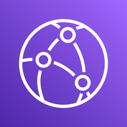
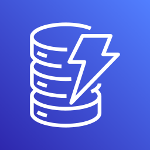

CS7980 · Indigenomics Portal · AWS Architecture
System Overview — one app, two subsystems, two regions
A single Next.js app on Lambda behind CloudFront serves both the RAP platform and the legal-cases corpus across a Canada / US data-residency split.
Browser
institute · supplier

CloudFront
CDN / edge
Next.js on Lambda
Web · OpenNext
Secrets Manager
AuthSecret · HMAC
ca-central-1 · RAP platform
S3 RapUploads
presigned PUT
Async workers
Extract·Rollup·Align
SES
weekly digest

RAP tables
single-table · ×7
RapAnalytics
PITR export
Athena
roadmap
us-east-1 · legal cases + AI runtime
shared AI inference
Bedrock
BDA·Claude·Titan
Textract
LAYOUT OCR
LegalCases
~3.5k cases · 43k items
CasesIndex
bm25 / vectors
BriefGen
briefing notes
cross-region
in-region call
data / stream
cross-region (residency)
roadmap (provisioned, not yet active)
RoadmapAnalytics on-ramp. The RapAnalytics bucket is provisioned so a DynamoDB point-in-time export can land in S3 for Athena + Glue to answer ad-hoc, cross-tab questions — without ever touching the live tables. The bucket is live today (it also holds Bedrock extraction output); the Athena query layer is the next step, so the path is one deploy away rather than an architecture change.